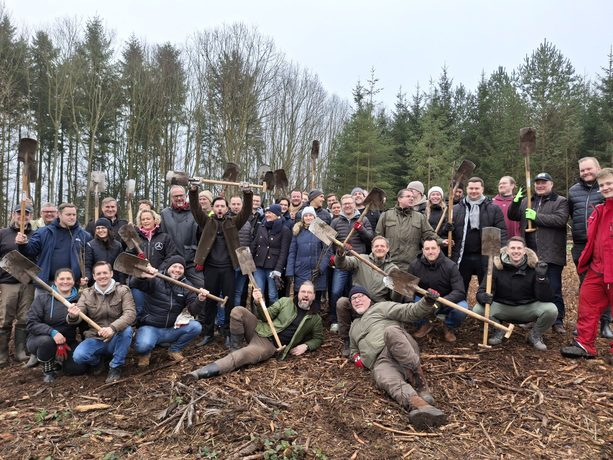
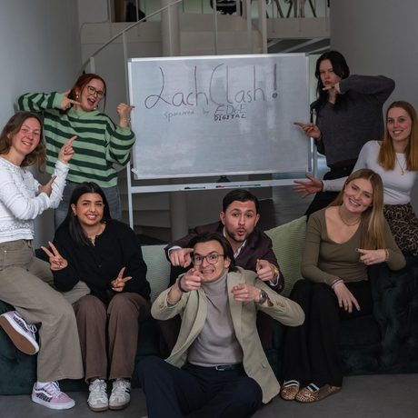
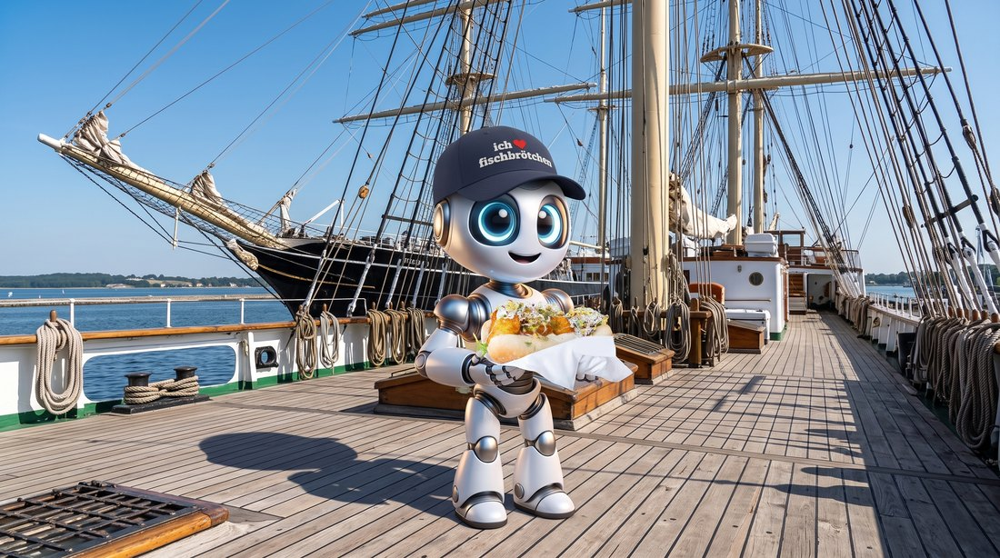
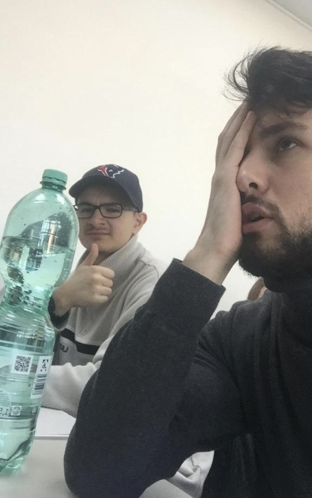
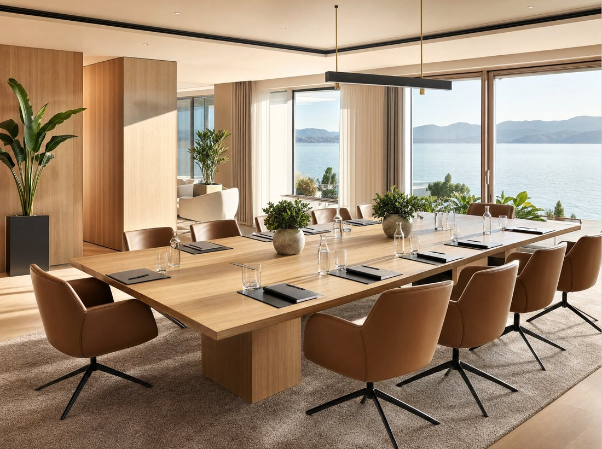
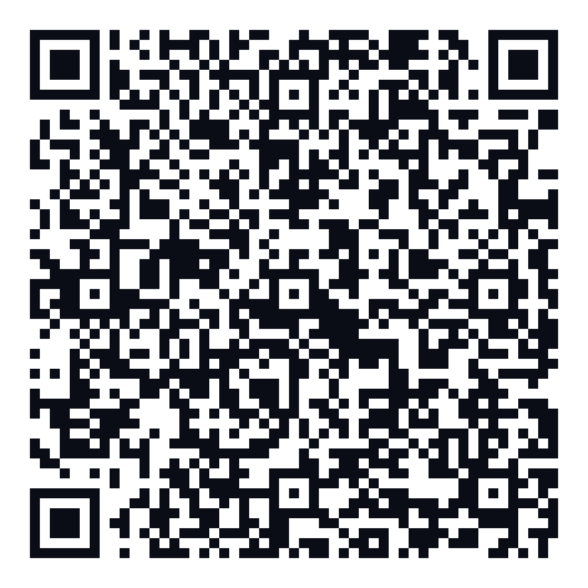
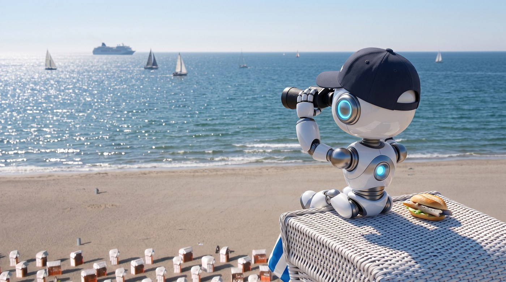
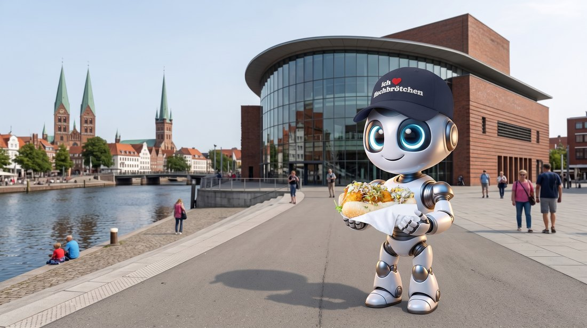

KI-Klartext zum Frühstück.
20. August 2026 · K64 Lübeck · Netzwerkfrühstück der LTM


KI in den Arbeitsalltag.
Aus Lübeck.







Guten Tag,
wir suchen für den 14. Oktober einen Raum für 25 Personen, ganztägig, mit Mittagessen. Beamer und WLAN wären wichtig.
Können Sie uns ein Angebot machen? Wir entscheiden Ende der Woche.
Viele Grüße, Katrin Behrens
Eine Anfrage, wie sie jede Woche eingeht
Sehr geehrte Damen und Herren,
vielen Dank für Ihre Anfrage. Gerne unterbreiten wir Ihnen ein individuelles Angebot.
Teilen Sie uns dafür bitte noch Ihre Wünsche mit.
Wir freuen uns auf Ihre Rückmeldung.
Hallo Frau Behrens,
der 14. Oktober ist frei. Für 25 Personen passt der Raum Trave, Beamer und WLAN sind drin.
Die Tagungspauschale liegt bei 68 Euro pro Person.
Soll ich den Termin bis Freitag festhalten?
Der Unterschied liegt nicht im Werkzeug. Er liegt in der Bestellung.
Diesseits
Wir haben uns im Unternehmen eine KI angeschafft.
Jenseits
Unsere Leute arbeiten wirklich damit.
Auf dieser Brücke stehen gerade fast alle.
Wir fragen schlecht.
„Pizza."
Ihr bekommt irgendeine.
„Eine Salami, 32er, dünner Boden,
extra Käse, in einer halben Stunde,
Fischstraße 16."

Ihr bekommt genau die.
Je genauer die Bestellung, desto besser das Ergebnis.
Der praktische Teil
Angebot · Absage · Bewertung
„Wir suchen für den 14. Oktober einen Raum für 25 Personen, ganztägig, mit Mittagessen. Können Sie uns ein Angebot machen?"
Anfrage von Frau Behrens
Hallo Frau Behrens, der 14. Oktober ist frei. Für 25 Personen empfehle ich den Raum Trave: Tageslicht, ruhig, gut für einen ganzen Tag. Die Pauschale liegt bei 68 Euro pro Person. Ich halte den Termin bis Freitag fest. Passt das?
Die Fakten kommen von euch. Was ihr nicht sagt, wird erfunden.
„Wir planen unsere Jahresfeier mit 120 Gästen. Haben Sie Platz für uns?"
Guter Kunde, kommt jedes Jahr
Hallo Herr Petersen, diesmal muss ich passen: bei 120 Gästen sind wir zu klein. Wenn Sie mögen, frage ich nebenan nach. Und für Ihre kleinere Runde im Frühjahr halte ich gern wieder etwas frei.
Die KI hält den Ton, den man nach zwölf Mails selbst nicht mehr findet
„Frühstück um neun leergeräumt, nichts kam nach. Personal genervt."
Öffentlich, vor zwei Stunden
Das tut uns leid, so soll ein Morgen bei uns nicht anfangen. An dem Tag war eine Gruppe früher da als angemeldet. Regulär gibt es bis 10 Uhr Frühstück. Schreiben Sie uns, wir machen das wieder gut.
Die Antwort ist für die zwanzig, die nächste Woche mitlesen
„Du bist Veranstaltungsleiterin."
„Sie soll den Termin halten."
„68 Euro, Raum Trave, 14.10. frei."
„Eine Mail, 150 Wörter, Ende mit Frage."
Mehr ist es nicht.

Bevor ihr loslegt
Daten · Erfindungen · Kennzeichnung
Der Weg drumherum: Platzhalter statt Klarnamen. „Frau B." reicht völlig, der Text wird genauso gut.
In den kostenlosen Zugängen lernen die Anbieter aus dem mit, was ihr eintippt.
Unten links über euren Namen.
Heißt auch Datenkontrolle.
„Modell verbessern" aus.
Geschäftskonten sind meist ohnehin ausgenommen. Nachsehen lohnt sich trotzdem.
Was am liebsten erfunden wird
Woran ihr es merkt
An gar nichts. Erfundenes klingt wie Richtiges.
Die einzige Regel, die hilft: Alles, was das Haus verlässt, liest ein Mensch gegen.
Die KI schreibt den Entwurf. Die Verantwortung bleibt am Tisch.

Nicht die KI ist durchgefallen. Wir haben nicht gegengelesen.

EU AI Act, Artikel 50
Wer KI-Bilder veröffentlicht, muss das offenlegen.
Ein Satz wie links reicht. Oder eines dieser Zeichen

Kostenlos bei derVerordnung (EU) 2024/1689, Artikel 50. In Kraft seit August 2024, dieser Teil anwendbar ab 2. August 2026.

Ein Fall. Einmal richtig bestellt. Heute Nachmittag.

Fragt uns, was ihr fragen wollt.
Es gibt hier keine Frage, die zu einfach wäre.
Und wenn wir etwas nicht wissen, sagen wir das auch
EDGE Digital
Fischstraße 16 · 23552 Lübeck
Künstliche Intelligenz. Echte Wirkung.